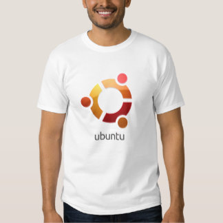
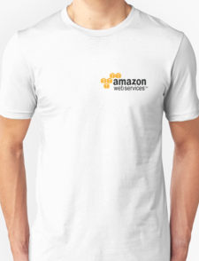

Kyle's (Fashion) Style Guide
I recently read “Why Are SO Many Millennials SO Uncool?”. Let’s start with a quote:
*For the purpose of this writing, I’m defining “cool” as those who don’t conform, who don’t always fit in nor do they try to, and who follow their own path; and “uncool” as those who dress, act, and have the same tastes as the masses and are vulnerable to corporate influences.
Now, I’m by no means some sort of authority on coolness. By this definition there is certainly some degree of subjectivity, but this definition has a hint of personal-values embedded into it.
In otherwords, this is more than “I don’t like black socks and sandles”, but more like “I value non-corporate-sellouts.” At least this value extends beyond just personal taste.
Individuality Versus Popularity
Anyone can choose to adopt this value. I can appreciate it.
If fully adopted, it seems like this would encompass normal corporate branding stuff, as well as things that are simply “popular”. By this definition, wearing a popular brand name or adopting a trendy style is “uncool”. This is at odds with the definition of “cool” that I learned in middle-school. In fact, in middle-school the definition of cool was the exact opposite of the author’s definition.
This is fine. As we mature into adults, some people outgrow this definition of coolness. Others do not.
 |
|
|---|---|
| Corporate Gucci Bag: Uncool | Handmade Etsy Bag: Cool |
I can get behind this. I also individuality over popularity. I also dislike corporate influences. (or heck, external influences in general)
Examining My (Tech) Wardrobe
One of my other personal values is consistency. If I’m going to adopt this value and be consistent, then perhaps I should examine my wardrobe…
What external corporate ends am I promoting with my wardrobe? Well let’s start with all these technology tshirts:
 |
|
|---|---|
| Docker Shirt: Uncool | OpenSSL Shirt: Cool |
Both Docker and OpenSSL are open source, but wearing a Docker shirt implicitly promotes the Docker Company. On the other hand, OpenSSL is goverend by the OpenSSL Software Foundation. Is wearing a Docker shirt on par with showing off your Gucci bag?
|  |  |
|---|---|
| Ubuntu Shirt: Uncool | Debian Shirt: Cool |
Ubuntu is a product of Canonical. Debian doesn’t have any corporate counterpart. Is wearing an Ubuntu shirt uncool because you are providing free advertising for a corporate entity?
|  |  |
|---|---|
| AWS Shirt: Uncool | Openstack Shirt: Uncool too |
I don’t know man, I don’t think Openstack shirts are cool either….
Non-tech
These above examples are given mostly because the represent a large portion of my wardrobe. In general the same principle of rejecting corporate sponsors carries over to non-tech shirts.
I dare say that even wearing shirts with logos of your current or previous employers are not cool.
Conclusion
In general, wearing something that promotes another company’s products, I guess is uncool, even if you like the product or even contribute to it. The root cause is that you are allowing yourself to be treated as a means to their promotion?
Of course the act of trying to be cool in uncool in itself, so I’m pretty sure I’m forever destined to remain… uncool.
Comment via email